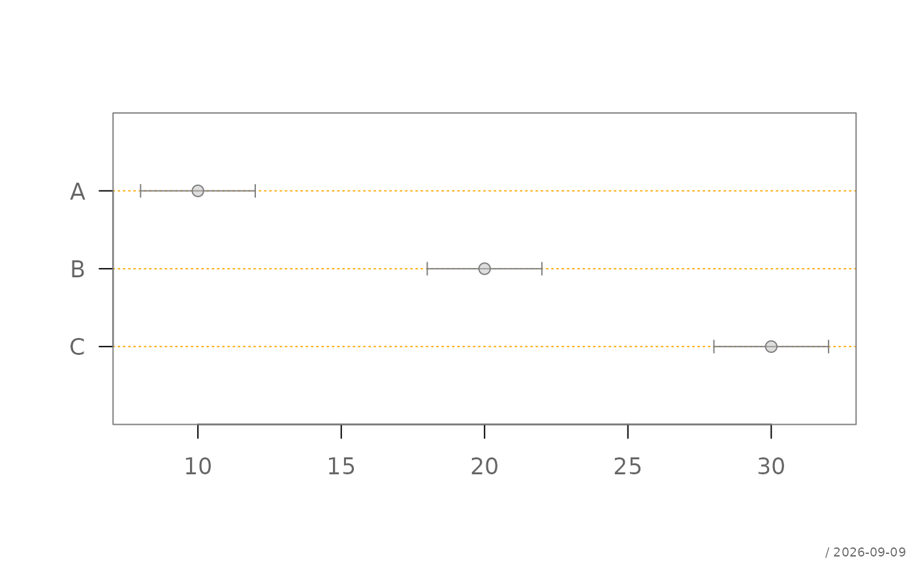

Converts common confidence interval representations into a standardized
object of class "CI". The standardized representation removes the
ambiguity between ordinary numeric data and confidence interval data.
Usage
as.CI(x, ...)
# S3 method for class 'matrix'
as.CI(x, ...)
# S3 method for class 'data.frame'
as.CI(x, estimate = "est", lower = "lci", upper = "uci", ...)
# S3 method for class 'list'
as.CI(x, ...)
# S3 method for class 'CI'
as.CI(x, ...)
# Default S3 method
as.CI(x, ...)
is.CI(x)Arguments
- x
object to convert or, for
is.CI(), object to test- ...
further arguments passed to methods
- estimate
name of the data-frame column containing the point estimates
- lower
name of the data-frame column containing the lower confidence limits
- upper
name of the data-frame column containing the upper confidence limits
Value
as.CI() returns a data frame of class "CI" containing
the columns est, lci, and uci, followed by any
grouping columns; is.CI() returns a single logical value
Details
A "CI" object is a data frame containing the columns est,
lci, and uci. Additional columns are retained and can be used
as grouping variables by functions such as plotDot().
The primary purpose of as.CI() is to declare explicitly that an
object contains estimates and confidence limits. For example, a numeric
matrix with three columns is normally ambiguous: its columns may represent
three groups or the estimate, lower limit, and upper limit. Passing the
matrix to as.CI() declares that its columns have the latter meaning.
Supported inputs are:
a numeric matrix with exactly three columns, interpreted in the order
est,lci, anducia data frame containing columns for the estimates and confidence limits; their names can be specified with
estimate,lower, anduppera list in which every element contains three values representing
c(est, lci, uci)an array-like result from
tapply()in which every cell containsc(est, lci, uci); its dimensions are converted to grouping variablesan existing
"CI"object, which is returned unchanged
The standardized object can be passed directly to plotDot() to
display the estimates and their confidence intervals. This is particularly
useful for matrices, because a bare matrix supplied to plotDot() is
interpreted as grouped estimates rather than as confidence interval data.
Examples
# matrix containing estimate, lower limit, and upper limit
x <- matrix(
c(
10, 20, 30,
8, 18, 28,
12, 22, 32
),
ncol = 3,
dimnames = list(
c("A", "B", "C"),
c("est", "lci", "uci")
)
)
ci <- as.CI(x)
ci
#> est lci uci
#> A 10 8 12
#> B 20 18 22
#> C 30 28 32
is.CI(ci)
#> [1] TRUE
# display the estimates and confidence intervals
plotDot(ci)

# data frame using the standard column names
d <- data.frame(
est = c(10, 20),
lci = c(8, 18),
uci = c(12, 22),
sex = c("F", "M")
)
as.CI(d)
#> est lci uci sex
#> 1 10 8 12 F
#> 2 20 18 22 M
# data frame using different column names
d <- data.frame(
item = c("A", "B"),
estimate = c(10, 20),
lower = c(8, 18),
upper = c(12, 22)
)
as.CI(
d,
estimate = "estimate",
lower = "lower",
upper = "upper"
)
#> est lci uci item
#> 1 10 8 12 A
#> 2 20 18 22 B
# confidence intervals returned by tapply()
if (FALSE) { # \dontrun{
xci <- with(
Pizza,
tapply(
temperature,
driver,
lumen::meanCI,
na.rm = TRUE
)
)
plotDot(as.CI(xci))
} # }